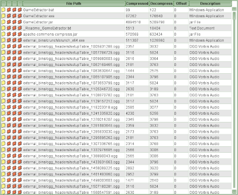

Table View
Back to Index
The files in the archive will be shown as a table. The columns shown in the table can be turned on and off in the Options. Clicking on the table heading will sort the files by the chosen column.

This is an example of a Table View